Pakistan
|
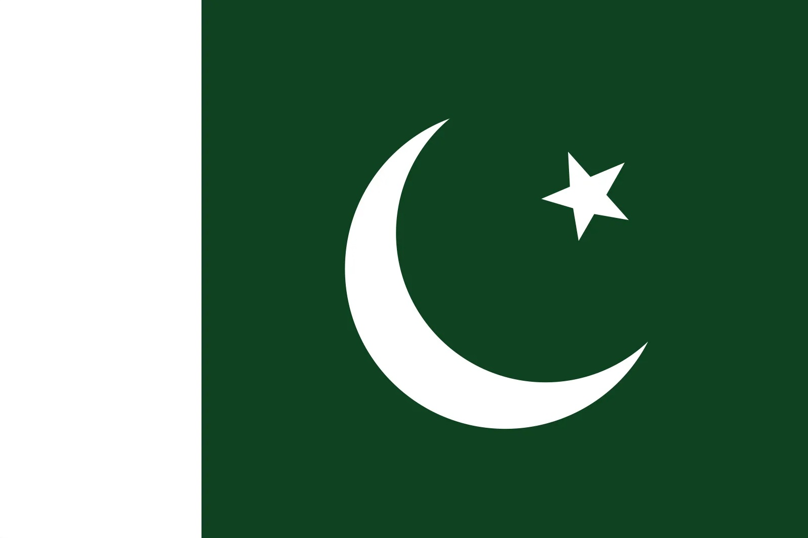
Pakistan is a must visit destination, brimming with stunning landscapes, rich culture, and centuries-old history. From the towering peaks of the Himalayas and Karakoram to the lush valleys of Hunza and Swat, the country offers an unparalleled experience for nature lovers and adventure seekers. Pakistan's cultural diversity is equally captivating, with influences from ancient civilizations like Mohenjo-Daro and Gandhara, beautiful Mughal-era architecture in Lahore, and vibrant bazaars showcasing traditional crafts and cuisine. The hospitality of the Pakistani people is legendary, making travelers feel welcomed wherever they go. Whether you’re exploring the vast deserts, crystal-clear lakes, historic sites, or the lively urban centers, Pakistan is an ideal destination for those looking to experience both breathtaking natural beauty and an authentic cultural journey. Contents of this Page: |
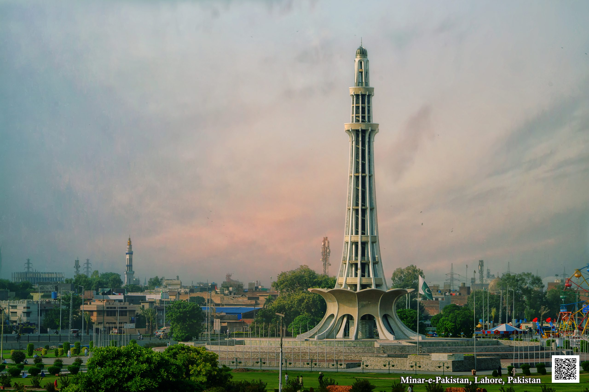 |
Food
Pakistani cuisine is rich, diverse, and bursting with flavors, reflecting the country's history, geography, and cultural influences. It combines elements of South Asian, Central Asian, and Middle Eastern culinary traditions, resulting in a unique fusion of spices, ingredients, and cooking techniques. From the aromatic rice dishes of Punjab to the hearty meat curries of Khyber Pakhtunkhwa, Pakistani food offers something for every palate.
BiryaniA beloved rice dish often made with marinated meat (such as chicken, beef, or mutton), aromatic basmati rice, and a blend of spices like cardamom, cinnamon, and cloves. Each region in Pakistan has its own take on biryani, with Karachi and Lahore being especially famous for it. |
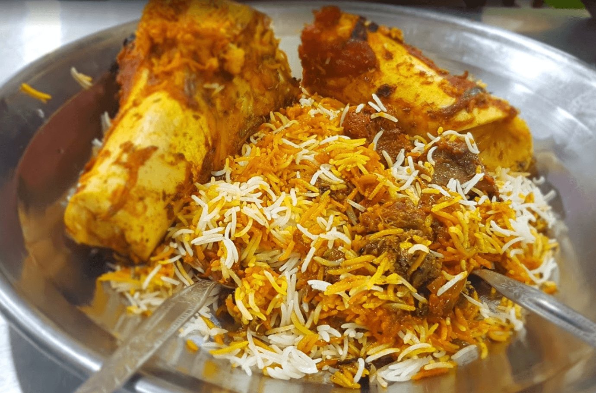 |
KarahiA popular curry made by cooking meat (typically chicken or mutton) in a wok-like pot called a “karahi,” with tomatoes, green chilies, garlic, ginger, and various spices. It’s often topped with fresh cilantro and served with naan. |
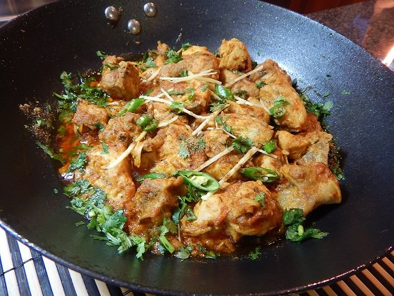 |
NihariA slow-cooked beef or lamb stew that originated in the Mughal kitchens, nihari is known for its rich, spicy gravy and is typically enjoyed as a breakfast dish, especially in Lahore and Karachi. |
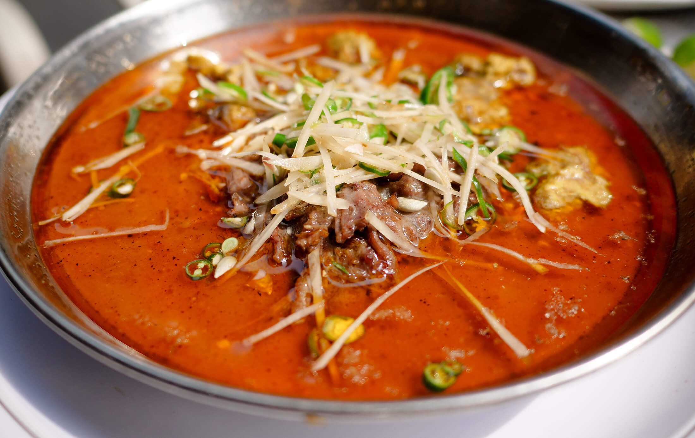 |
HaleemA hearty stew made with wheat, barley, lentils, and slow-cooked meat, haleem is a labor-intensive dish that’s incredibly filling and often garnished with fried onions, green chilies, and lemon. |
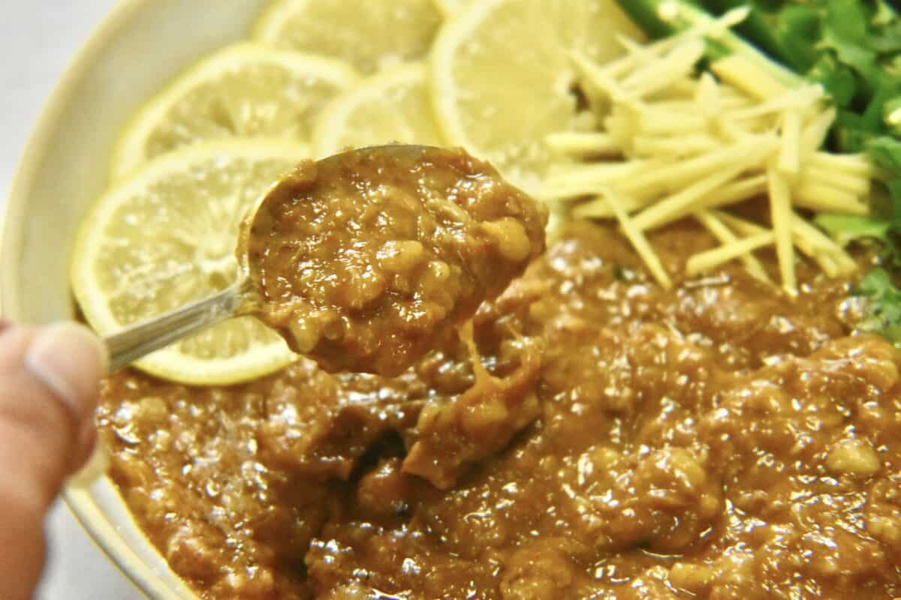 |
No Pakistani meal is complete without bread, which comes in many forms such as naan, roti, paratha, and chapati. Meals are often accompanied by fresh chutneys, raita (a yogurt-based condiment with herbs), and pickles.
| Naan | Roti | Paratha | Chapati |
| 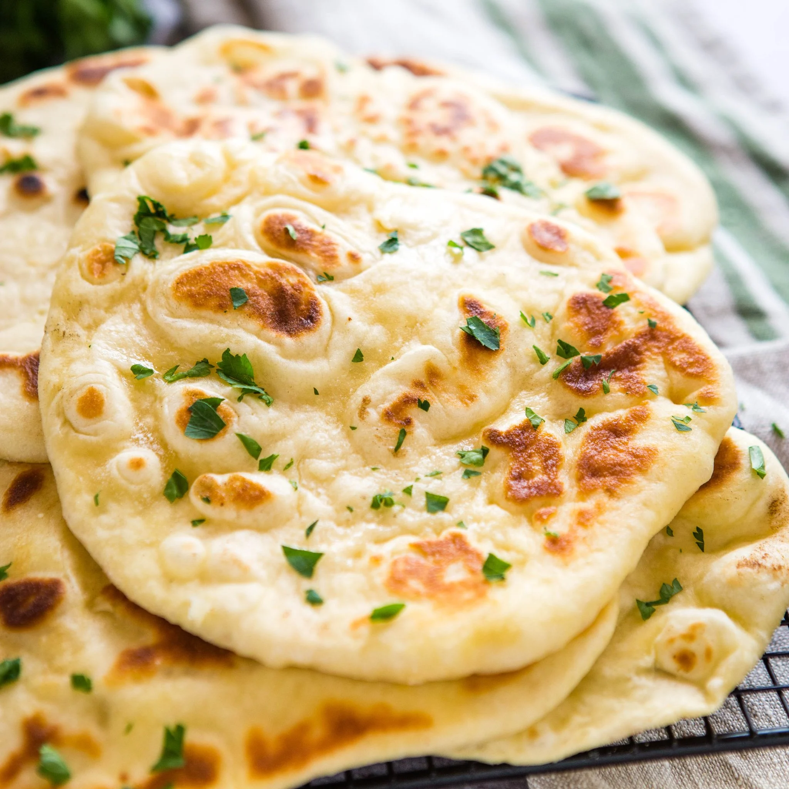 | 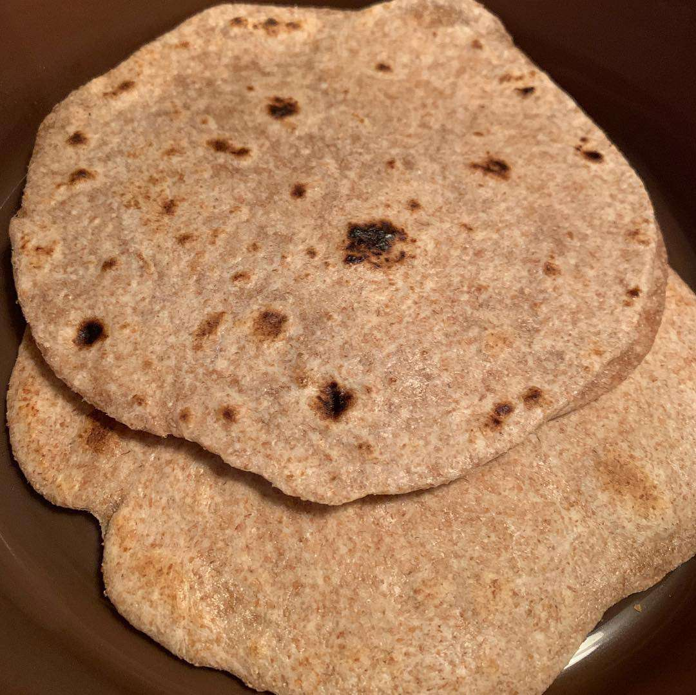 | 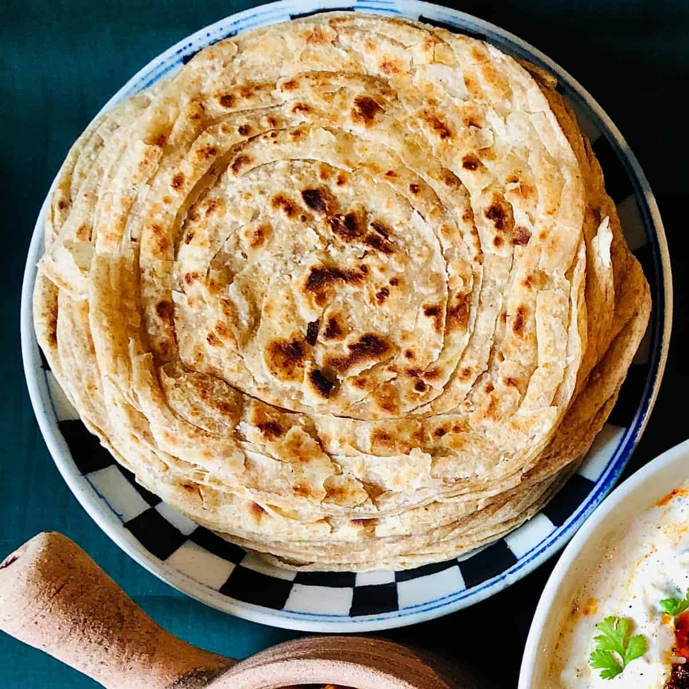 | 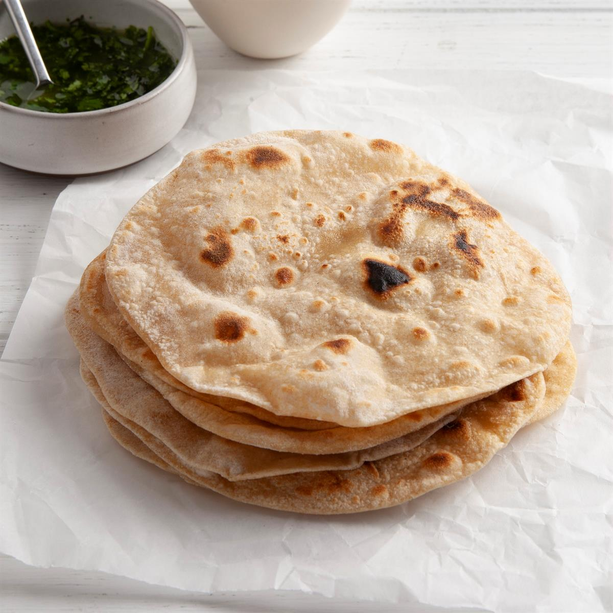 |
Desserts
Pakistani desserts reflect a rich cultural history, blending influences from Central Asian, Persian, Indian, and Middle Eastern cuisines. These sweets are cherished not only for their flavors but also for their significance in celebrations, religious festivals, and family traditions.
In Pakistan, desserts are closely tied to celebration and hospitality. They’re considered a symbol of goodwill, often served to guests or given as gifts on special occasions like weddings, Eid, and religious gatherings. Many desserts are made with simple, natural ingredients like milk, sugar, nuts, and spices, reflecting a traditional approach that values quality and richness.
Gulab JamunThese soft, syrup-soaked treats are made from a mixture of milk solids, flour, and sometimes khoya, which gives them a rich, milky sweetness. Deep-fried to a golden brown and then soaked in a fragrant syrup infused with cardamom and rose water, gulab jamun has a melt-in-the-mouth texture that’s both decadent and comforting. Often served at weddings, festivals, and special gatherings, this dessert holds a special place in Pakistani celebrations and hospitality. |
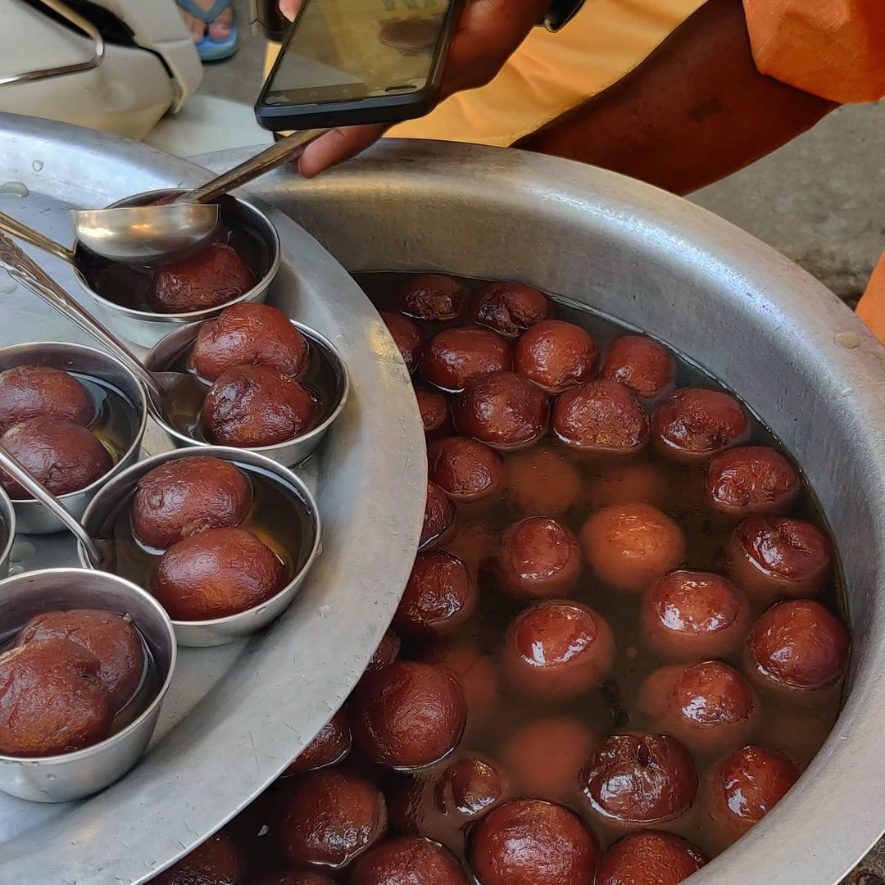 |
JalebiA beloved street food snack, jalebi is made by deep-frying wheat flour batter into crispy spirals and then immersing them in sugar syrup. The result is a delightful combination of crunch on the outside and juicy sweetness on the inside. Jalebi is enjoyed warm, sometimes paired with milk or tea, and is especially popular during festive events, creating a nostalgic treat that brings people together. |
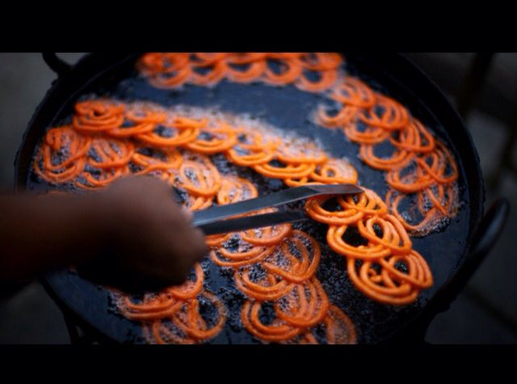 |
KheerThis creamy rice pudding is a staple dessert, made by slowly cooking rice in milk and sugar until thickened, then adding aromatic cardamom and topping it with sliced almonds and pistachios. The rich, smooth texture and subtle sweetness make it a comforting dessert often reserved for special occasions like Eid or family gatherings, symbolizing warmth and togetherness. |
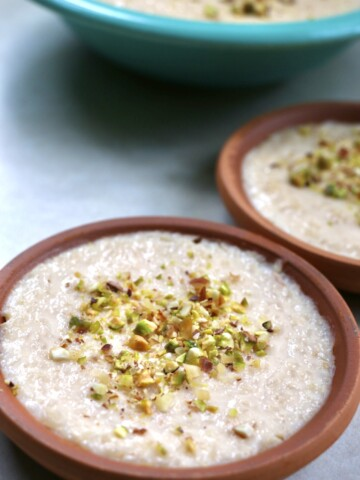 |
Sohan HalwaA caramel-like confection made from flour, ghee, sugar, and nuts, Sohan Halwa has a chewy texture and a deep, rich sweetness. The Multani variety of this dessert is especially famous, with locals and visitors alike savoring its unique taste. Sohan Halwa is often presented as a gift and enjoyed on festive occasions. |
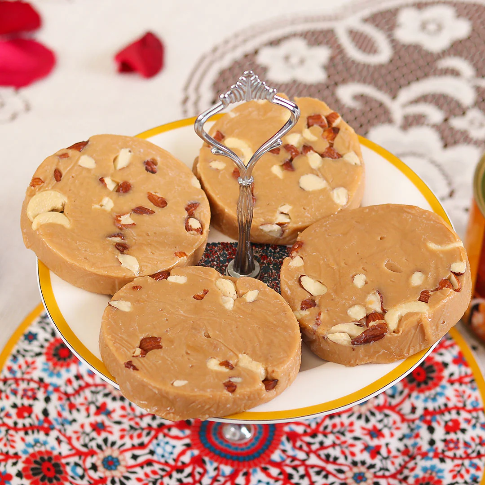 |
Cities
Lahore
| 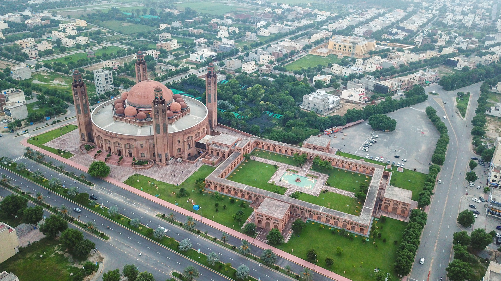 |
Lahore, the vibrant heart of Pakistan, is a city renowned for its rich history, cultural heritage, and lively atmosphere. As the capital of Punjab province, it is Pakistan's second-largest city and often regarded as the country's cultural capital. Lahore’s significance spans centuries, with its roots in ancient civilizations and its rise as a prominent city under the Mughal Empire, British rule, and later, as part of independent Pakistan. Known for its architecture, bustling bazaars, food, and festivals, Lahore is a city that reflects the spirit and diversity of Pakistan. Lahore’s culture is a blend of ancient traditions and modern influences, marked by its residents’ passion for art, music, literature, and food. The city has a thriving arts scene, with many theaters, art galleries, and cultural events. The annual Lahore Literary Festival attracts writers, artists, and intellectuals from around the world, while events at Alhamra Arts Council showcase local talent in music, dance, and theater. Lahoris are known for their warm hospitality and love of celebration. Festivals like Basant (the kite-flying festival), Eid, and Independence Day are celebrated with zeal, with the whole city coming alive with colors, lights, and festivities. The city’s traditional Punjabi music and dance forms, including bhangra and dhol, add to Lahore’s vibrant culture, making it a city that never sleeps. |
Islamabad
| 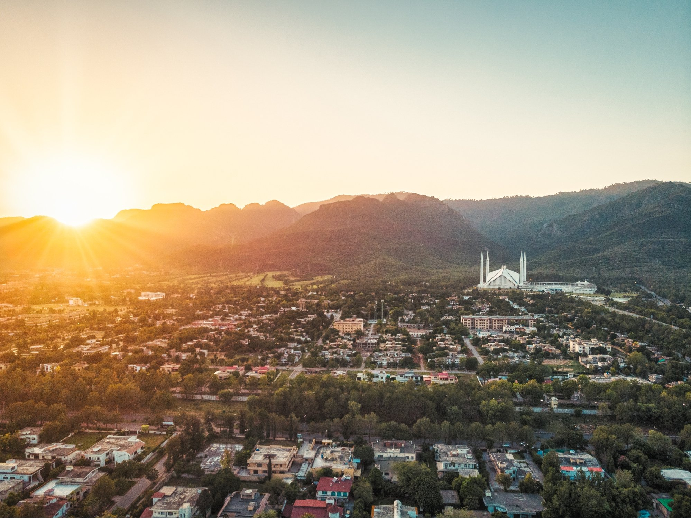 |
Islamabad, the capital city of Pakistan, is known for its modern infrastructure, scenic beauty, and unique blend of urban development and natural surroundings. Established in the 1960s as a planned city, Islamabad was designed to replace Karachi as the national capital and is renowned for its well-organized layout, greenery, and peaceful ambiance. It sits at the foothills of the Margalla Hills, offering stunning landscapes, recreational spaces, and a pleasant climate. Islamabad is known for its calm and relaxed lifestyle compared to other major cities in Pakistan. As a cosmopolitan city, it has a diverse population, including diplomats, expatriates, and people from various parts of the country. The city is home to several universities, think tanks, and research institutions, making it a hub for academics and professionals. |
Peshawar
| 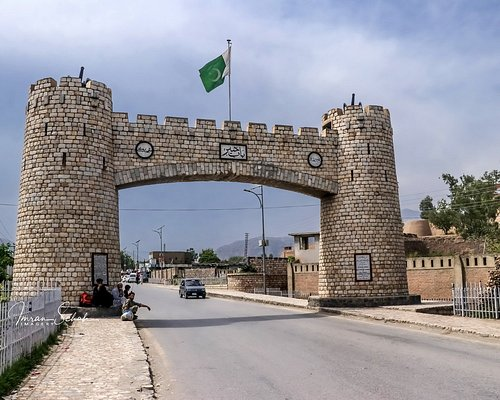 |
Peshawar, one of Pakistan’s oldest cities, is a vibrant and historic gateway to the Khyber Pass and a melting pot of cultures and civilizations. As the capital of Khyber Pakhtunkhwa province, it’s a key cultural and economic hub in northwest Pakistan, with a rich history that dates back over 2,000 years. Located near the Afghan border, Peshawar has long been a crossroads for trade, conquest, and migration, which has contributed to its diverse cultural landscape and unique identity. Kalash Valley is particularly famous for its festivals, such as Chilam Joshi in spring, Uchal in summer, and Choimus in winter, which celebrate the changing seasons and are filled with dancing, singing, and colorful attire. The Kalash people are known for their elaborate embroidered clothing, distinctive headwear, and warm hospitality. Visitors can also explore the valley's lush landscapes, crystal-clear rivers, and quaint villages, making it an unforgettable experience. |
Mountains
Pakistan is a land of towering mountain ranges, making it a paradise for nature enthusiasts, trekkers, and adventure seekers. With three of the world’s most impressive mountain ranges converging within its borders — the Himalayas, the Karakoram, and the Hindu Kush — Pakistan offers a diverse and breathtaking array of peaks, many of which are among the highest in the world.
K2
|
Pakistan is home to K2, the world's second-highest and one of the most awe-inspiring mountains, drawing adventurers and nature lovers from across the globe. Located in the heart of the Karakoram Range in Gilgit-Baltistan, K2 towers at 8,611 meters (28,251 feet), offering a breathtaking sight for visitors. Known as the "Savage Mountain" due to its challenging and rugged terrain, it presents a thrilling spectacle for trekkers, climbers, and photographers alike. While scaling K2 is reserved for experienced climbers, visitors can embark on the trek to Concordia, a high-altitude vantage point with spectacular views of K2 and other majestic peaks. Along the journey, tourists experience the warm hospitality of local communities, immerse themselves in unique Balti culture, and enjoy the scenic beauty of lush valleys, ancient glaciers, and pristine rivers. Pakistan’s K2 region not only promises an unforgettable adventure but also leaves travelers in awe of its raw, untouched natural beauty. |

|
Rakaposhi
| 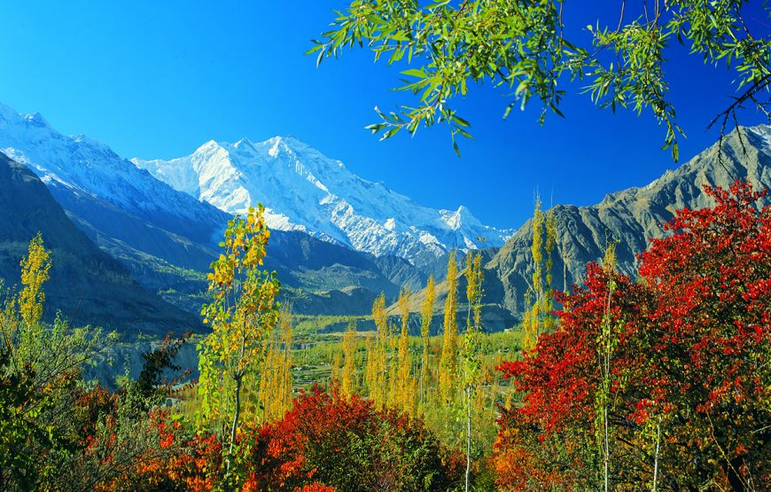 |
Rakaposhi, a stunning peak rising to 7,788 meters (25,551 feet), is one of Pakistan’s most iconic mountains, located in the Nagar Valley of Gilgit-Baltistan. Known as the "Mother of Mist," Rakaposhi’s symmetrical, snow-covered peak creates a breathtaking sight, especially at sunrise and sunset. Easily accessible from nearby villages like Minapin, the trek to Rakaposhi Base Camp offers an incredible journey through lush meadows, glacial streams, and vibrant local culture, making it a perfect adventure for nature lovers and trekkers alike. The warm hospitality of the Hunza and Nagar communities adds to the experience, allowing tourists to immerse themselves in the rich traditions and picturesque beauty of northern Pakistan. Rakaposhi promises visitors a unique and unforgettable glimpse of Pakistan’s natural splendor, making it a must-see for anyone exploring the Karakoram Range. |
Tirich Mir

|
Tirich Mir is the highest mountain in the Hindu Kush range, standing at an impressive elevation of 7,708 meters (25,289 feet), making it the tallest peak in the region and one of the most iconic mountains in Pakistan. Located in the Chitral District of Khyber Pakhtunkhwa province, close to the Afghanistan border, Tirich Mir dominates the landscape with its towering presence, attracting mountaineers, trekkers, and adventurers from around the world. Its name, meaning "King of Darkness" in the local language, is thought to be derived from its imposing height and the long shadows it casts over the surrounding valleys. |
Valleys
Kalash Valley
| 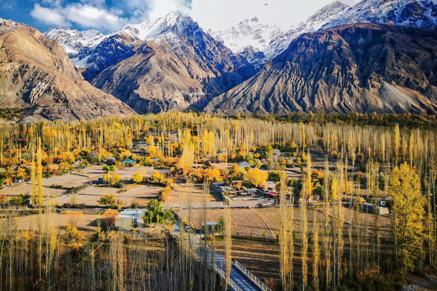 |
Kalash Valley, located in the Chitral district of Pakistan’s Khyber Pakhtunkhwa province, is a hidden gem known for its breathtaking scenery and unique culture. Nestled between the Hindu Kush mountains, this valley is home to the Kalash people, a distinct indigenous community with traditions, festivals, and a vibrant way of life that have been preserved for centuries. The Kalash Valley comprises three main valleys: Bumburet, Rumbur, and Birir, each offering visitors a chance to experience the unique Kalash culture and enjoy the valley's natural beauty. Kalash Valley is particularly famous for its festivals, such as Chilam Joshi in spring, Uchal in summer, and Choimus in winter, which celebrate the changing seasons and are filled with dancing, singing, and colorful attire. The Kalash people are known for their elaborate embroidered clothing, distinctive headwear, and warm hospitality. Visitors can also explore the valley's lush landscapes, crystal-clear rivers, and quaint villages, making it an unforgettable experience. |
Skardu
|
Skardu, nestled in the Gilgit-Baltistan region of northern Pakistan, is a mesmerizing valley known for its rugged mountains, crystal-clear lakes, and rich cultural heritage. Positioned as the gateway to some of the world's highest peaks, including K2, the second-highest mountain globally, Skardu is a top destination for trekkers, climbers, and nature enthusiasts. The landscape is dotted with surreal, turquoise lakes like Shangrila (also known as Lower Kachura Lake) and Upper Kachura Lake, serene rivers, and stunning viewpoints like Deosai National Park, often called the "Land of Giants" due to its vast, unspoiled plains. Skardu's charm extends beyond its natural beauty. The historic Skardu Fort and the nearby Buddha Rock Carvings showcase the valley's ancient Buddhist influence, while local bazaars are a delightful place to experience Balti culture, try traditional foods, and shop for handcrafted goods. Skardu offers an unmatched combination of adventure, serenity, and cultural immersion, making it an unforgettable destination for any traveler. |

|
Hunza
| 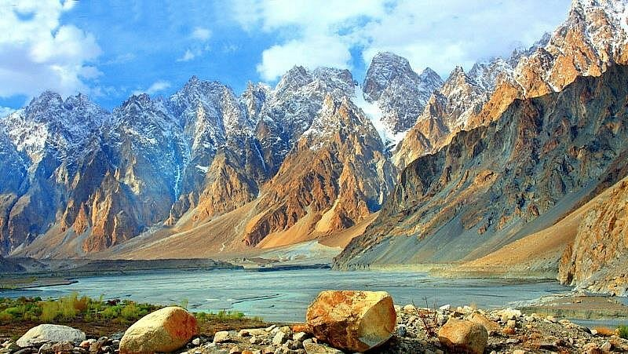 |
The Hunza Valley is a stunning and remote mountainous region located in the Gilgit-Baltistan region of northern Pakistan, nestled within the Karakoram mountain range. Known for its breathtaking landscapes, vibrant culture, and serene environment, Hunza attracts travelers from around the world seeking to experience its natural beauty and rich heritage. The valley sits at an altitude of approximately 2,500 meters (8,200 feet) and is surrounded by some of the world’s highest peaks, including Rakaposhi, Ultar Sar, and Ladyfinger Peak. This dramatic setting makes Hunza a haven for mountaineers, trekkers, and nature lovers, who come to witness its snow-capped peaks, pristine rivers, and lush green terraces. The valley is divided into three main regions: Upper Hunza (Gojal), Central Hunza, and Lower Hunza, each offering its unique landscapes and attractions. Upper Hunza, or Gojal, is particularly popular for its striking blue Attabad Lake, formed after a landslide in 2010, and for its proximity to the Khunjerab Pass, the highest paved border crossing in the world, connecting Pakistan to China. Central Hunza includes Karimabad, the valley’s main town, famous for the historic Baltit Fort and Altit Fort, which provide a glimpse into the architectural and cultural heritage of Hunza. The Lower Hunza region, near Gilgit, is known for its orchards, scenic views, and vibrant villages. |